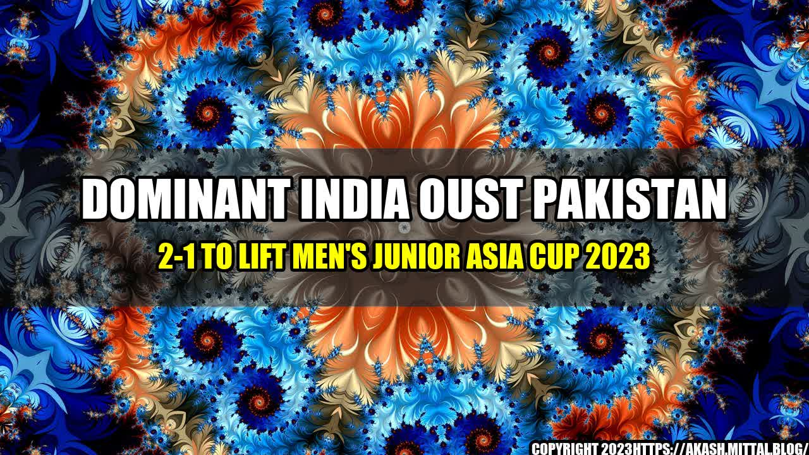

Dominant India Oust Pakistan 2-1 to Lift Men's Junior Asia Cup 2023

It was a thrilling match between India and Pakistan in the Men's Junior Asia Cup 2023, held in Dhaka, Bangladesh. The stadium was packed with hockey enthusiasts from both countries who were eagerly waiting to witness the clash between the arch-rivals. The atmosphere was charged with excitement, and the players could feel the pressure of the high-stakes game. Both teams were determined to give their best and clinch the prestigious title, but it was India who emerged as the winners, defeating Pakistan 2-1 in a thrilling encounter.
The Indian team played with great zeal and passion, displaying their skills and strength on the field. They dominated the game from the start, putting enormous pressure on the Pakistani defense. The players were agile, fast, and decisive, making it difficult for their opponents to break their defense. The Pakistani team, on the other hand, tried their best to match up to India's aggressive play but failed to score many goals. The match was a tight affair until the last minute, but India managed to hold onto their lead and secure the victory.
The Indian team had a total of 12 shots on goal compared to Pakistan's 8.
India had 7 penalty corners, out of which they scored 2 goals.
The Indian goalkeeper made 4 saves, while the Pakistani goalkeeper made 6 saves.
Conclusion
- India played with great determination and skill, dominating the game from the start.
- The Indian team's aggressive play and excellent defense put enormous pressure on the Pakistani team.
- The victory in the Men's Junior Asia Cup 2023 is a testament to India's growing dominance in the world of hockey.
Curated by Team Akash.Mittal.Blog
Share on Twitter Share on LinkedIn